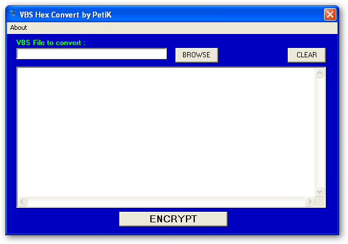

Private Declare Function GetOpenFileName Lib "comdlg32.dll" Alias "GetOpenFileNameA" (pOpenfilename As OPENFILENAME) As Long
Private Type OPENFILENAME
lStructSize As Long
hwndOwner As Long
hInstance As Long
lpstrFilter As String
lpstrCustomFilter As String
nMaxCustFilter As Long
nFilterIndex As Long
lpstrFile As String
nMaxFile As Long
lpstrFileTitle As String
nMaxFileTitle As Long
lpstrInitialDir As String
lpstrTitle As String
flags As Long
nFileOffset As Integer
nFileExtension As Integer
lpstrDefExt As String
lCustData As Long
lpfnHook As Long
lpTemplateName As String
End Type
Private Sub abt_Click()
MsgBox "PetiK's VBS Hex Convert written by PetiK with VB6" & vbCrLf & _
"France - ©2002", vbInformation, "About"
End Sub
Private Sub butbrs_Click()
Set fso = CreateObject("Scripting.FileSystemObject")
Dim OFName As OPENFILENAME
OFName.lStructSize = Len(OFName)
OFName.hwndOwner = Me.hWnd
OFName.hInstance = App.hInstance
OFName.lpstrFilter = "VBS Files (*.vbs)" + Chr$(0) + "*.vbs" + Chr$(0)
OFName.lpstrFile = Space$(254)
OFName.nMaxFile = 255
OFName.lpstrFileTitle = Space$(254)
OFName.nMaxFileTitle = 255
OFName.lpstrInitialDir = App.Path
OFName.lpstrTitle = "Choice a VBS File..."
OFName.flags = 0
If GetOpenFileName(OFName) Then
szFile.Text = Trim$(OFName.lpstrFile)
Set v = fso.OpenTextFile(Trim$(OFName.lpstrFile), 1)
allf = v.ReadAll
v.Close
szVBS.Text = allf
lbl1.Caption = "Before : " & Len(allf) & " bytes"
End If
End Sub
Private Sub butclr_Click()
lbl1.Caption = ""
lbl2.Caption = ""
szVBS.Text = ""
szFile.Text = ""
End Sub
Private Sub butencrypt_Click()
Dim lngbufferlen
Dim bbyte As Byte
Dim vbshex As String
Set fso = CreateObject("Scripting.FileSystemObject")
If Len(szFile.Text) = 0 Then
MsgBox "Please put a file name", vbCritical, "ERROR"
Else
Open szFile.Text For Binary As #1
DoEvents
Do While Not EOF(1)
DoEvents
Get #1, , bbyte
e = Hex(bbyte)
If Len(e) = 1 Then e = "0" & Hex(bbyte)
vbshex = vbshex & e
Loop
Close #1
d1 = ""
Randomize (Timer)
d1 = Chr(Int(Rnd(1) * 26) + 65)
d2 = ""
Randomize (Timer)
d2 = Chr(Int(Rnd(1) * 26) + 65)
d3 = ""
Randomize (Timer)
d3 = Chr(Int(Rnd(1) * 26) + 65)
vbsn = ""
Randomize (Timer)
For I = 1 To 4
vbsn = vbsn & Chr(Int(Rnd(1) * 26) + 97)
Next I
vbsc = "On Error Resume Next" & vbCrLf & vbCrLf & _
"Execute " & d1 & "(""" & vbshex & """)" & vbCrLf & vbCrLf & _
"Function " & d1 & "(" & vbsn & ")" & vbCrLf & _
"For " & d2 & "=1 To Len(" & vbsn & ") Step 2" & vbCrLf & _
d1 & "=" & d1 & " & Chr(""&h"" & Mid(" & vbsn & "," & d2 & ",2))" & vbCrLf & _
"Next" & vbCrLf & _
"End Function"
szVBS.Text = vbsc
lbl2.Caption = "After : " & Len(vbsc) & " bytes"
Open "vbshex.vbs" For Output As #1
Print #1, vbsc
Close #1
MsgBox "The new file is save as ""vbshex.vbs""", vbInformation, "VBS Hex Convert"
End If
End Sub